Pulstastung
Der Puls wird an beiden Handgelenken in mehreren Tiefen ertastet. Er zeigt, ob Fülle oder Leere vorliegt, wo Hitze oder Kälte sitzt.
TCM-Praxis in Pinsdorf · Salzkammergut
Angespannt, erschöpft, einfach nicht ausgeglichen? Über Pulstastung und Zungenschau finde ich heraus, wo Ihr Qi ins Stocken geraten ist — und wir bringen es wieder in Fluss.
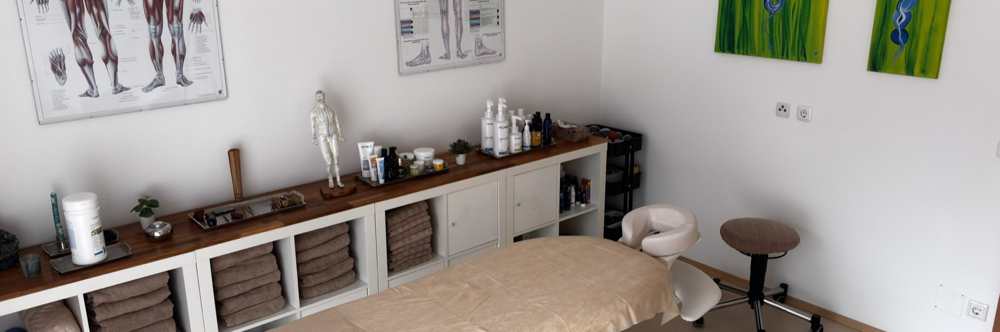
Der Befund
Jede Behandlung beginnt mit einer chinesischen Befundung. Erst dann weiß ich, womit ich Ihnen am besten helfe.
Der Puls wird an beiden Handgelenken in mehreren Tiefen ertastet. Er zeigt, ob Fülle oder Leere vorliegt, wo Hitze oder Kälte sitzt.
Form, Farbe und Belag der Zunge geben Auskunft über den Zustand der inneren Organe und über Nässe, Trockenheit oder Stagnation.
Farbe, Ausdruck und Zonen im Gesicht ergänzen das Bild und helfen, die Behandlung auf Ihre Konstitution abzustimmen.
Leistungen
Vier Methoden, die ich je nach Befund kombiniere. Was zu Ihnen passt, zeigt sich nach dem ersten Gespräch.
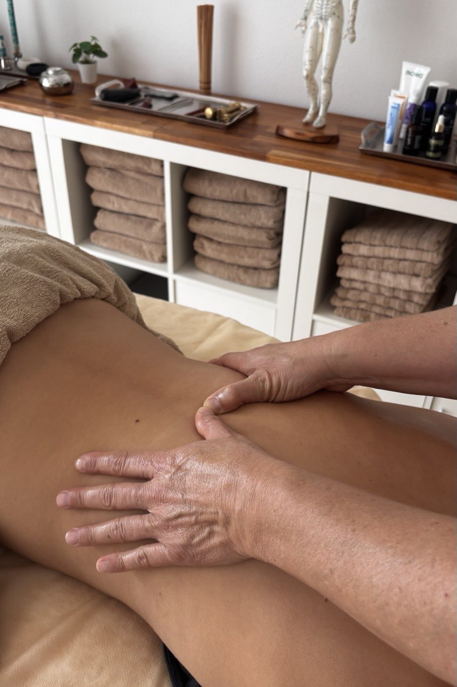
Tuina Anmo ist die traditionelle Heilmassage der chinesischen Medizin. Je nach Bedarf kombiniere ich Muskelentspannung, Akupressur, Leitbahntherapie und Mobilisation.
Hilfreich bei:
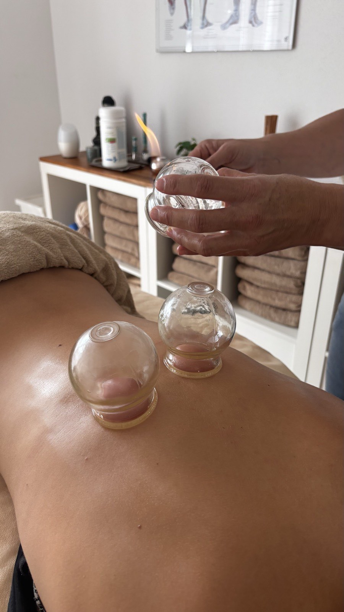
Diese drei Verfahren setze ich bei Bedarf zusätzlich zur Massage ein — dort, wo die Hände allein nicht tief genug reichen.
Moxibustion wärmt mit glimmendem Beifuß gezielt einzelne Punkte und wirkt bei Kälte und Leere. Schröpfen löst festsitzende Stagnationen im Gewebe. Gua Sha, das Schaben, bringt Stauungen an die Oberfläche und macht sie damit lösbar.
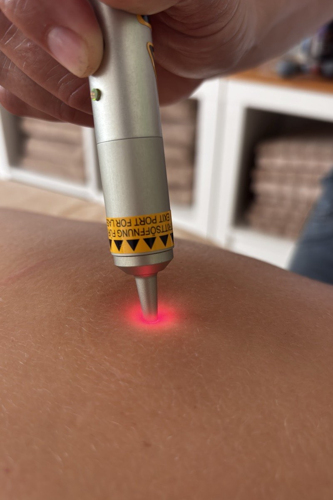
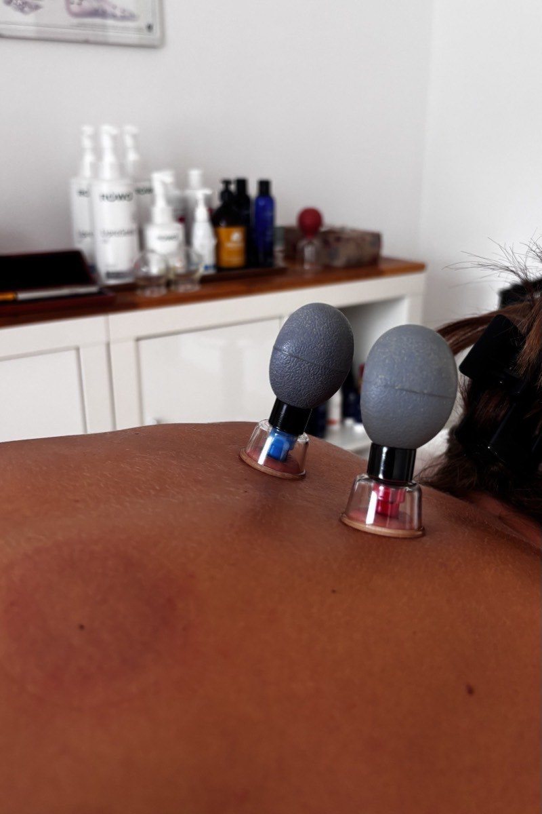
Diese Formen der Akupunktur beruhen auf denselben Wirkprinzipien wie die Nadelakupunktur, kommen aber ohne Hautverletzung aus.
Nach der chinesischen Befundung erstelle ich ein Behandlungskonzept, das Disharmonien im Leitbahnsystem über die Akupunkturpunkte ausgleicht. Gerade die Laserakupunktur eignet sich gut für Kinder, weil sie völlig schmerzfrei ist.
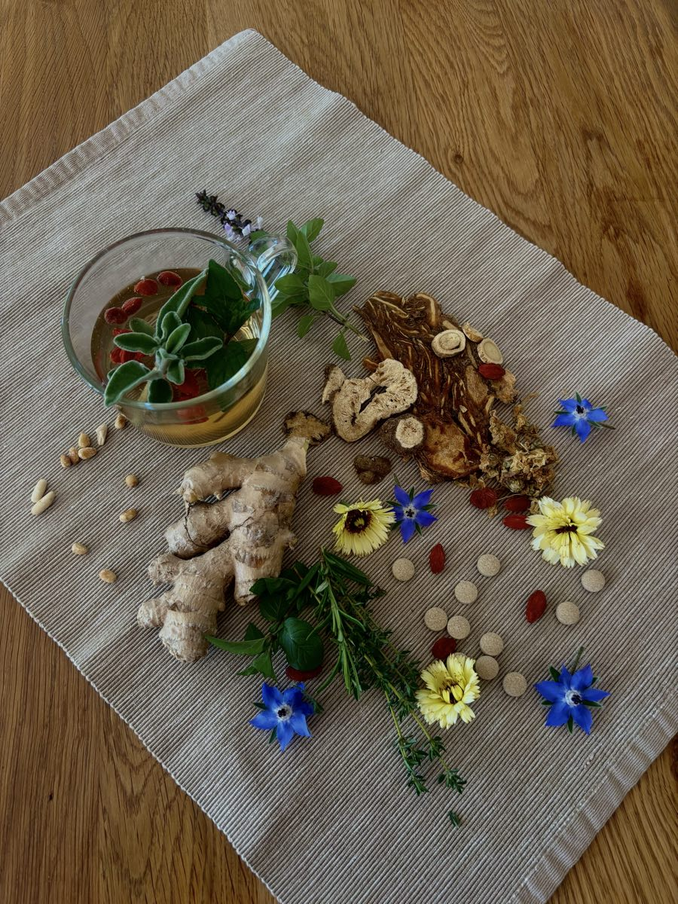
Was wir essen, soll den Körper stützen und Energie geben — und kann bestehende Disharmonien spürbar beeinflussen. Bei der Ernährungsempfehlung schaue ich auf Ihre Konstitution, Ihre momentane Situation und die äußeren Einflüsse.
Mir ist wichtig, dass die Empfehlungen alltagstauglich sind. Mit westlichen und chinesischen Kräutermischungen als Tee oder Presslinge lässt sich der Therapieerfolg zusätzlich verstärken — dazu berate ich Sie gerne persönlich.
Termin buchen
Wählen Sie aus, worum es geht — im Kalender sehen Sie meine freien Zeiten und bekommen die Bestätigung sofort. Ist nichts Passendes dabei, rufen Sie bitte einfach an, es findet sich fast immer etwas.
75 €pro Stunde
Abgerechnet wird nach tatsächlicher Dauer. Eine Behandlung dauert meist 45 bis 60 Minuten, das Erstgespräch mit Befundung länger.
Freie Termine werden geladen …
Kein passender Termin dabei? Rufen Sie an unter +43 676 5566998 oder schreiben Sie mir. Ich melde mich verlässlich zurück.
Wu Xing
Jede Jahreszeit gehört zu einem Element, jedes Element zu bestimmten Organen — und jedes Element nährt das nächste. Deshalb sind meine Kochworkshops nicht beliebig angesetzt, sondern folgen dem Lauf des Jahres.
Element wählen, um mehr zu sehen. Im Kochworkshop verbinden wir Theorie und Praxis: Wir schauen uns an, was das Element der jeweiligen Jahreszeit für Ihren Körper bedeutet, und kochen anschließend gemeinsam. Zu den Terminen
Workshops & Kuren
Kochworkshops dauern rund vier Stunden, finden in kleinen Gruppen statt und umfassen Theorie und Kochpraxis. Rezepte und Lebensmittel sind im Preis enthalten.
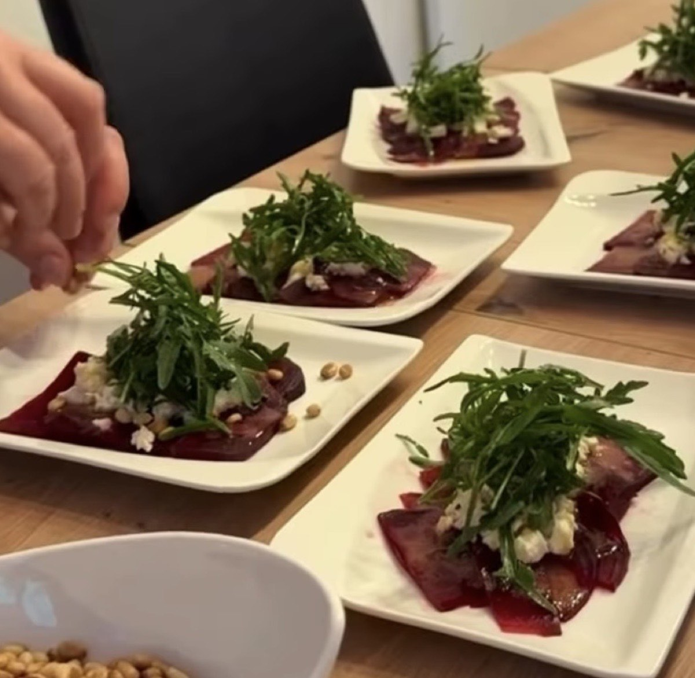
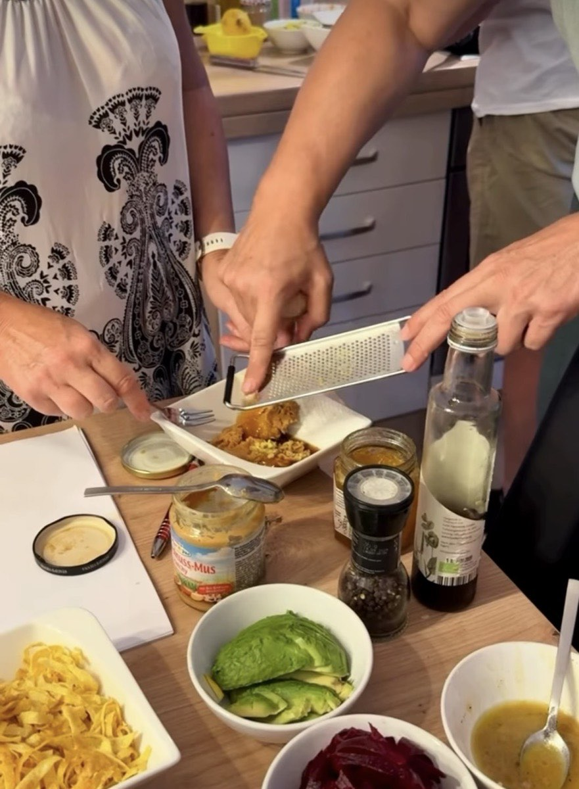
Termine werden geladen …
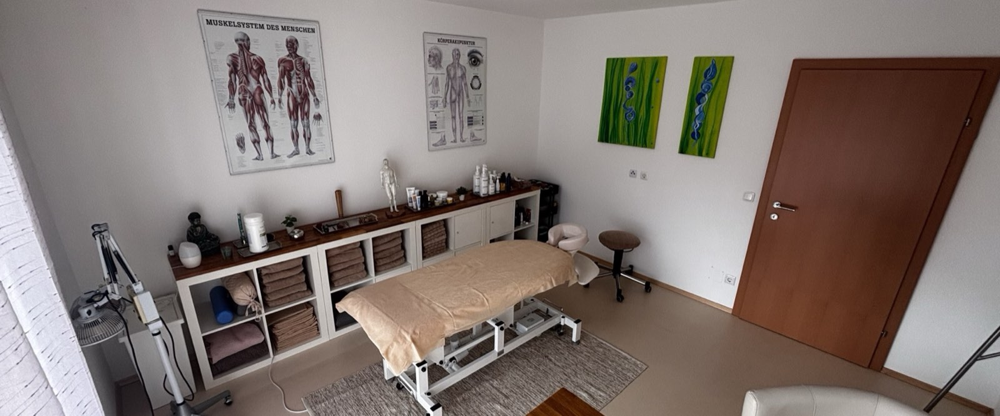
Über mich
Sabine Grohe, Tuina Anmo Praktikerin.
Mit den traditionellen chinesischen Lehren bin ich schon früh in Berührung gekommen — meine Mutter war Feng-Shui-Beraterin.
Diese Philosophie hat mich von Anfang an beeindruckt, und ich habe meinen Weg in der chinesischen Medizin und ihren verschiedenen Methoden gefunden. Seit meiner ersten Ausbildung zur chinesischen Energiearbeit sind viele weitere dazugekommen.
Kontakt
+43 676 5566998 sabine.grohe@live.at
Rufen Sie einfach an. Wenn ich gerade in einer Behandlung bin, hebe ich nicht ab — ich rufe aber verlässlich zurück. Schriftlich geht es über das Formular weiter unten.
Die Praxis erreichen Sie über die Außentreppe. Im Wartebereich können Sie in Ruhe ankommen — kommen Sie gerne ein paar Minuten früher.
Ich bin keine Ärztin. Meine Arbeit ersetzt keine ärztliche Untersuchung oder Behandlung, sondern begleitet sie.
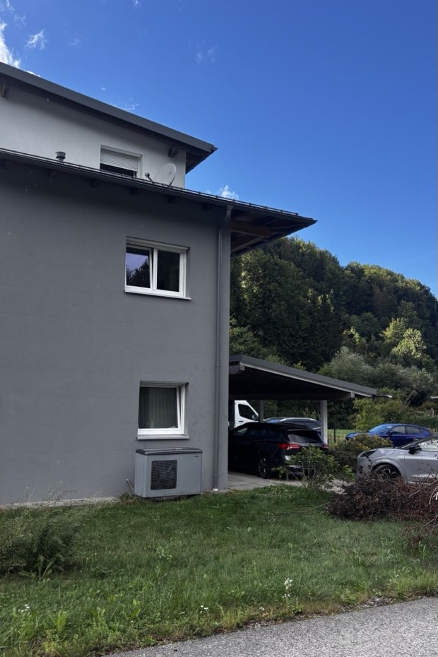
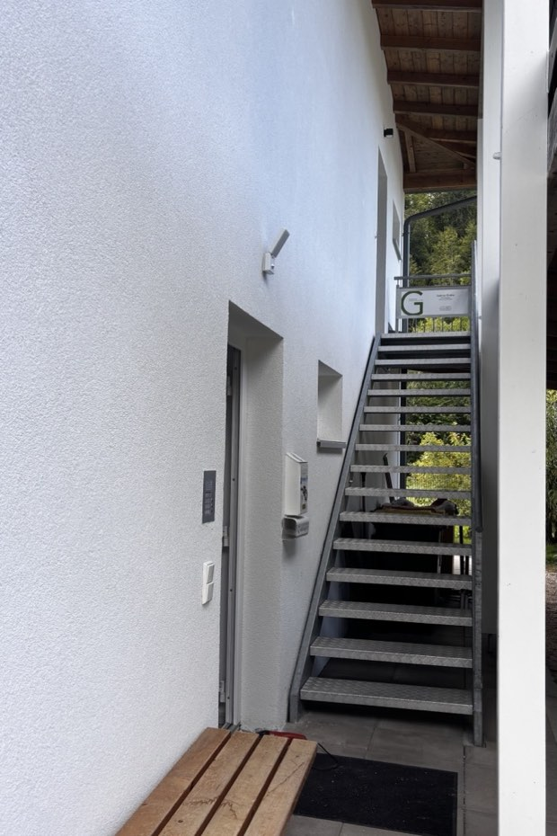
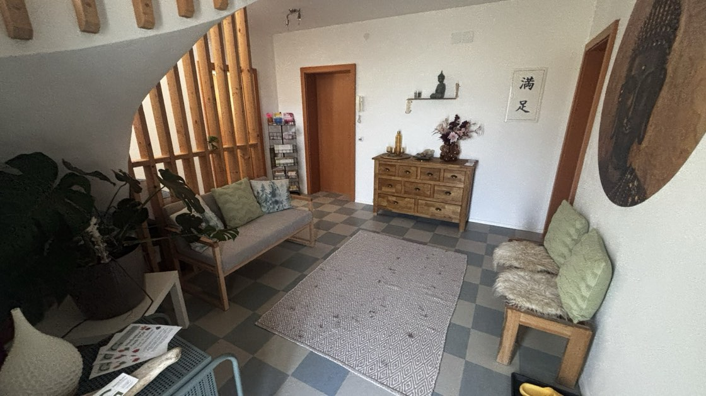
Alle Felder mit * brauche ich, um mich zurückmelden zu können.